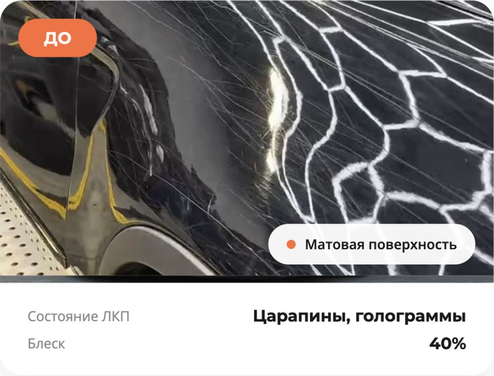
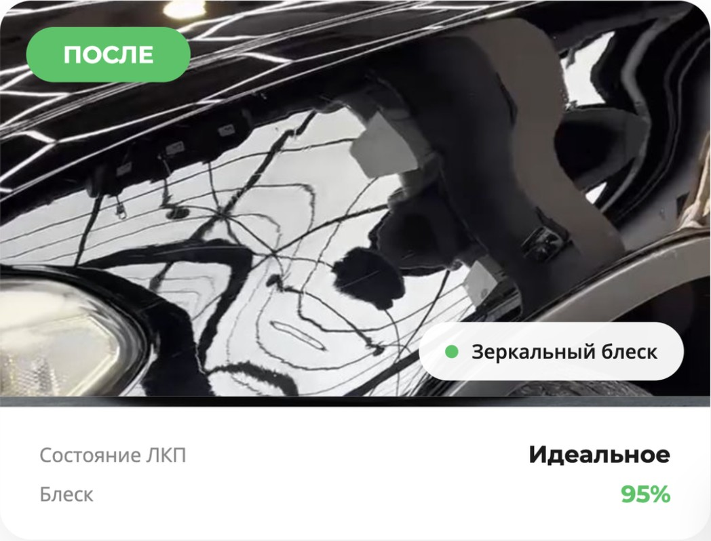

Возврат блеска, защита лакокрасочного покрытия и подготовка к нанесению керамики или воска — базовый навык, который нужен почти каждому автомобилю раз в сезон.
Автомобиль выглядит так, будто только что выехал из салона.
Полировка снимает микроцарапины и защищает поверхность от дальнейшего разрушения.
Обязательный шаг перед нанесением керамики или защитного воска.
Ухоженный кузов — один из первых факторов, на который смотрит покупатель.
Базовый навык, самый быстрый вход в детейлинг — 12 дней обучения.
Регулярный поток заказов и работа со сложными многослойными полировками.

